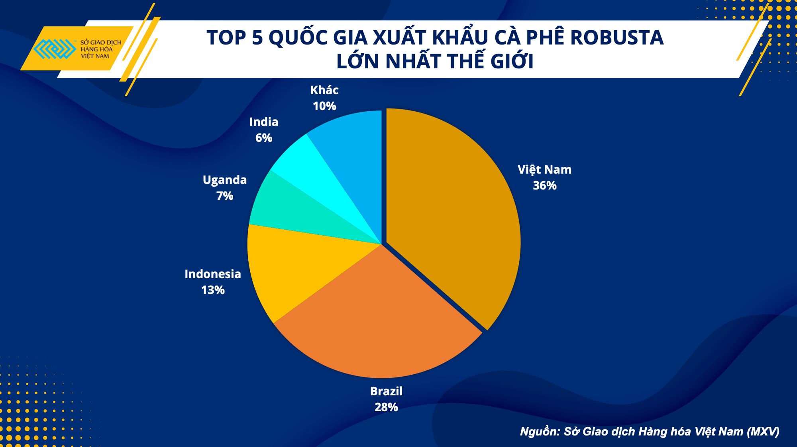

Cá cần nước, dev cần cà phê ☕️
Cà phê đối với tôi được nâng lên một tầm cao mới. Nó là một thứ tôn giáo chứ không đơn thuần là một loại đồ uống. Mỗi sáng không “làm” một ly cà phê sữa đá, thì tâm hồn tôi cứ bay bổng trên mây, nửa mê nửa tỉnh. Là một tín đồ của cà phê, hôm nay tôi chia sẽ trải nghiệm bản thân về loại đồ uống này.
Tại sao tôi thích dùng cà phê?
Có ba lý do.
Một là…
Công việc hằng ngày của tôi xoay quanh chiếc bàn phím ⌨️ và màn hình máy tính 💻 với hy vọng viết ra những dòng code có thể thay đổi cả thế giới, tất nhiên là trở nên tốt đẹp hơn
Việc này khiến tôi liên tưởng đến bộ phim Lucy (2014). Nữ chính vì vô tình dùng phải loại thuốc có chưa chất CPH4 từ đó có thể sử dụng 100% công suất bộ não, trở thành người có tri thức siêu phàm và khả năng kiểm soát không - thời gian thậm chí thay đổi cả thế giới.
Có lẽ bác biên kịch biết tiếng Việt nên mới dùng lối chơi chữ CàPHê thành CPH4 như trong kịch bản phim.
Cà phê đánh thức mọi giác quan của tôi, giúp tôi tỉnh táo và tập trung cao độ khi làm việc với mục tiêu cuối cùng là làm thế giới trở nên tốt đẹp hơn.
Hai là…
Hồi cách đây mấy năm, vợ thấy tôi ngày nào cũng dùng cà phê thì cằn nhằn là cà phê không tốt cho sức khỏe lại còn tốn tiền, tốn bạc. Thật ra thì cái gì dùng quá nhiều cũng không tốt cả kể cả có là thuốc bổ, còn tôi mỗi ngày đều nhâm nhi một tách cà phê thì lại được rất nhiều lợi ích. Lát nữa tôi sẽ liệt kê một vài công dụng của cà phê có lợi cho sức khỏe mà tôi lượm lặt được từ trên mạng. Còn việc uống cà phê tốn tiền, tôi không phủ nhận. Nhưng nhờ cà phê tôi mà tôi tỉnh táo hơn, làm việc với năng suất cao hơn, tôi lại kiếm được nhiều tiền hơn. Ngược lại nếu thiếu cà phê, công việc trì trệ, sai sót lung tung thì chẳng phải đã thất nghiệp từ lâu rồi hay sao?
Vợ tôi lại còn bảo bác sĩ X nào đó nói rằng những người nghiện rượu, trà, cà phê, thuốc lá thường bị vô sinh do tác động tiêu cực của những chất gây nghiện này lên sức khỏe sinh sản. Tôi không biết vị bác sĩ X này là ai, có phải chính là vợ tôi hay không
Ba là…
Việt Nam 🇻🇳 là nước xuất khẩu cà phê nhất nhì thế giới. Tôi uống cà phê vì ủng hộ người nông dân trồng cà phê, tạo đà phát triển kinh tế cho đất nước.

Nguồn: Xuất khẩu cà phê: Điểm sáng trong nhiều thách thức
(baochinhphu.vn)
Công dụng của cà phê theo chuyên gia (trên mạng)
Nhiều bài viết chỉ ra những lợi ích về sức khỏe từ việc dùng một đến hai tách cà phê mỗi ngày, tôi sẽ liệt kê một vài ý chính tóm gọn bên dưới.
- Tăng cường năng lượng, giảm mệt mỏi: Cà phê chứa
caffeine, một chất kích thích hệ thần kinh giúp tôi có thể tập trung hơn. - Lợi ích về sức khỏe lâu dài: Nhiều nghiên cứu chỉ ra rằng trong cà phê có chất chống oxi hóa, chống ung thư, giảm nguy cơ tiểu đường type-2, tăng tuổi thọ.
- Chống trầm cảm: Nếu không có cà phê, tôi có lẽ đã bỏ nghề từ lâu lắm rồi các bạn ạ
Và còn nhiều nữa…
Tổng kết
Ngắn gọn như đề bài viết “Cá cần nước, dev cần cà phê”. Với tôi, Cà phê là nguồn cảm hứng sáng tạo. Cà phê vừa giúp tôi tập trung làm việc, vừa mang lại nhiều lợi ích cho sức khỏe. Vậy nên nếu bạn chưa bao giờ dùng cà phê, thì ngại gì mà không thử?!
Cá cần nước, dev cần cà phê ☕️
https://thiennguyen.dev/2023/09/16/nhat-ky/2023-09-16-ca-can-nuoc-dev-can-cafe/


Comments